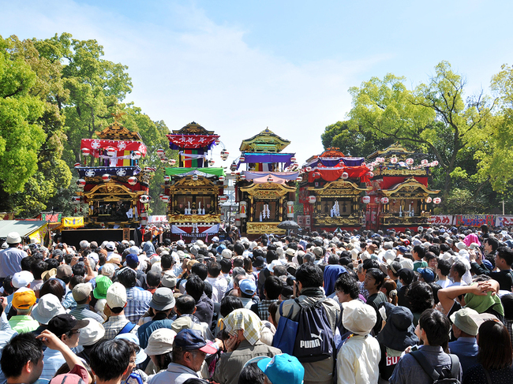

Hon-matsuri (本祭り) จุดสูงสุดของรอบเวลาศักดิ์สิทธิ์

รากศัพท์และการประกอบคำ:ประกอบด้วยคำว่า Hon (本) ที่แปลว่า รากฐาน, ตัวจริง, หรือหลัก และ Matsuri (祭り) ที่แปลว่า เทศกาลหรือการบูชาเทพเจ้า รวมกันหมายถึง "เทศกาลฉบับเต็มรูปแบบ/ตัวจริงเสียงจริง"
ความเป็นมาและระบบปฏิทินโบราณ:ในระบบการบริหารเมืองของญี่ปุ่นโบราณ เทศกาลขนาดใหญ่ต้องได้รับการอนุญาตและสนับสนุนเงินทุนจากโชกุนหรือเจ้าเมือง (Daimyo) เพื่อไม่ให้กระทบต่อผลผลิตทางการเกษตรและเศรษฐกิจ จึงมีการพัฒนาระบบที่เรียกว่า "ระบบปีเว้นปี" (Nenban-sei) หรือ "รอบ 3 ปี" ปีที่ไม่มีขบวนแห่ใหญ่ เรียกว่า Kage-matsuri (陰祭り - เทศกาลเงา) จะจัดพิธีกรรมอย่างสงบภายในเขตศาลเจ้าเท่านั้น ส่วนปีที่เป็น Hon-matsuri จะเป็นปีที่สะสมพลังงานและความศรัทธามาอย่างเต็มที่ เมืองทั้งเมืองจะหยุดทำงานเพื่อเฉลิมฉลอง
กลไกการใช้งานและหน้าที่ในงานเฟสติวัล: การปลดปล่อยครั้งใหญ่: ในปีที่เป็น Hon-matsuri ของเทศกาลสาดน้ำ ขบวนเกี้ยว Mikoshi จากทุกชุมชนย่อย (Chocho) ที่เก็บรักษาไว้จะถูกนำออกมาแห่พร้อมกันทั้งหมด (บางงานมีมากกว่า 50 หลัง) ระดับความรุนแรงของการสาดน้ำ: ปริมาณน้ำที่ใช้ในวัน Hon-matsuri จะมากกว่าปีปกติหลายเท่าตัว รถดับเพลิงประจำท้องถิ่นจะได้รับอนุญาตให้ต่อสายยางจากหัวจ่ายน้ำสาธารณะเพื่อฉีดน้ำเป็นอุโมงค์น้ำขนาดยักษ์ให้ขบวนแห่ลอดผ่าน ซึ่งถือเป็นภาพจำขั้นสุดของเทศกาลสาดน้ำญี่ปุ่น